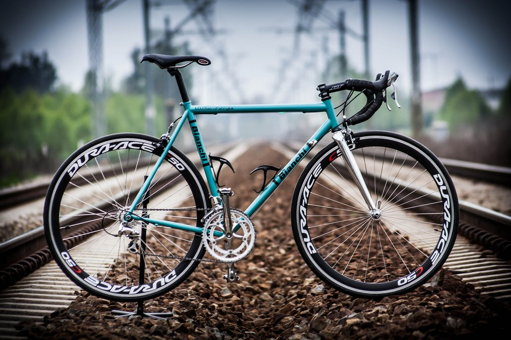
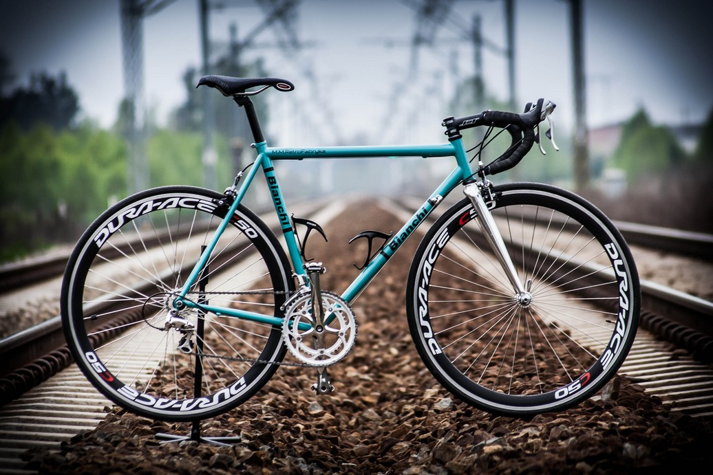

M.M.Retrofabryka

Każde zlecenie jest dla nas nowym wyzwaniem, a zadowolenie odbiorców najlepszą formą rekomendacji. Poprzez możliwość urzeczywistniania rowerowych marzeń naszych klientów, mamy znakomitą okazję realizować to, co potrafimy najlepiej, oddając się przy tym wieloletniej pasji. Tworzone w M.M.RetroFabryka projekty odznaczają się wyjątkowym wyglądem, znakomitą jakością wykonania oraz optymalnie dobranym osprzętem. Wszystko to pozwala nam budować jedyne w swoim rodzaju rowery, dostosowane do Państwa potrzeb lub indywidualnych pomysłów.

 



Wychodząc naprzeciw stale rosnącym wymaganiom branży rowerowej, a także obsłudze klienta, dysponujemy kadrą młodych, kreatywnych oraz perfekcyjnie przygotowanych fachowców połączonych pasją tworzenia. Ważnym aspektem jest również znakomicie wyposażone zaplecze warsztatowe oraz najwyższej jakości chemia wykorzystywana nie tylko w procesie lakierowania, ale także w naprawie włókna węglowego lub polerowaniu metali.


Produkty znanych, sprawdzonych i cenionych marek z branży rowerowej sprawiają, że poza unikalnym wyglądem dbamy także o optymalne rozwiązania techniczne, które bezpośrednio przekładają się na bezproblemową obsługę i długą eksploatację budowanych oraz serwisowanych przez nas rowerów. W oparciu o nabytą na przestrzeni wielu lat pracy wiedzę i doświadczenie zapewniamy również fachowe doradztwo oraz pomoc przy wyborze i zakupie poszczególnych części, akcesoriów oraz komponentów rowerowych.
Młody i energiczny zespół, w którego składzie znajdują się specjaliści połączeni wspólną pasją. Nasze doświadczenie poparte jest wieloletnim uprawianiem kolarstwa oraz miłością do jednośladów. Wyróżnia nas dbałość o najdrobniejsze szczegóły, fachowe podejście i kreatywność w tworzeniu nowych pomysłów. Wiedza oraz praktyka zdobyte na przestrzeni wielu lat pracy są gwarancją Państwa zadowolenia oraz solidnym fundamentem dalszej współpracy.

Mateusz Majcherczyk
Katarzyna Żurek

Przemysław Szadkowski
+48 668 876 518
Czestków F, 44J, 98-113 Buczek
retrofabryka@gmail.com